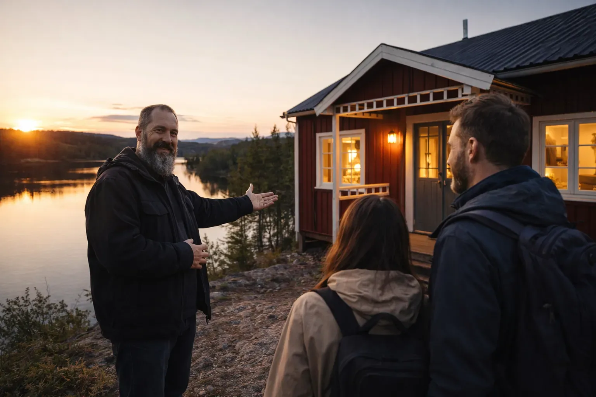
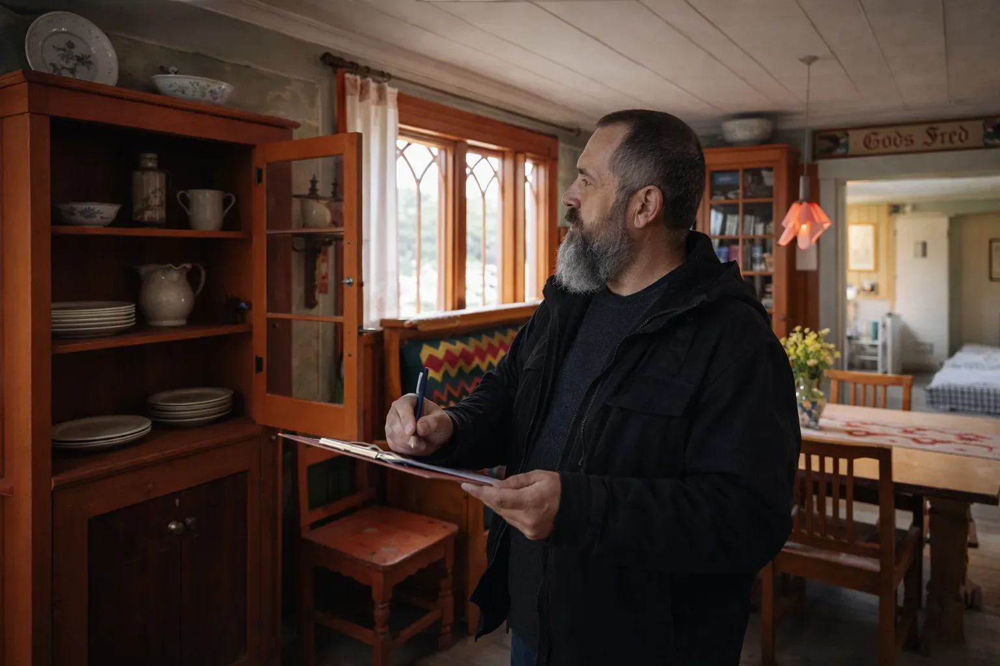
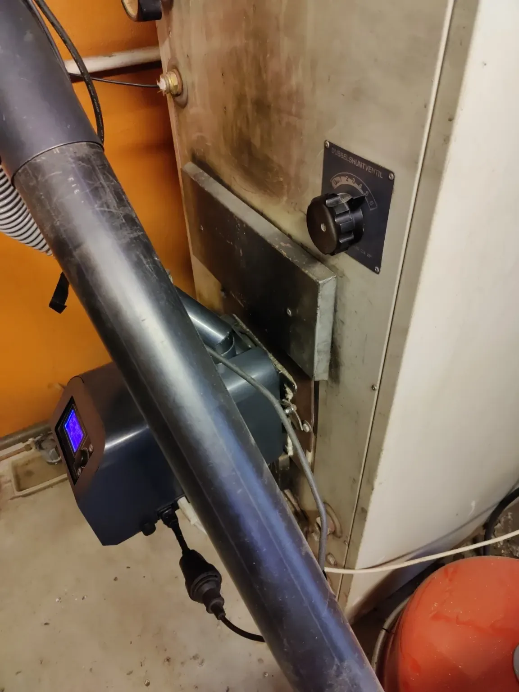

Guest-ready preparation
Agreed checks before arrival: heating, lights, water, obvious defects, access and the general presentation of the house.


VACATION HOME & RENTAL SUPPORT
Practical property care, local follow-up and hands-on support around holiday-home rentals in Värmland.
LOCAL SUPPORT THAT STAYS PRACTICAL
A holiday home in Sweden needs attention even when you are away. During empty periods, you want to know that the property is in good order; when you rent it out, the house and its facilities need to be ready for guests. Our local holiday-home care in Värmland helps you coordinate checks, preparations and practical maintenance. Before guests arrive, we check the points agreed with you. After they leave, we identify anything that needs cleaning, replacing, repairing or a closer inspection.
Based in Lesjöfors, we visit your holiday home and carry out the work agreed with you. This can include a property check, preparing for guests, small repairs and coordinating cleaning or maintenance. If a problem arises, we discuss what is needed and agree any next steps with you. Clear photos and updates keep you informed about the condition of your property and the work completed, even from a distance.
Our rental support fits the way you use your holiday home: for your own stays, rental or a combination of both. Together, we agree which visits and tasks suit your schedule and bookings. You remain in control of reservations, costs and decisions; we are your local contact for the agreed work at the property.
Based in Lesjöfors, I help homeowners in Filipstad and the surrounding area. Visits elsewhere in Värmland are possible by arrangement, depending on distance, access and availability. The scope and travel costs are agreed in advance.
Travel time: The first 30 minutes of travel time are free. After that, travel time is charged at 399 SEK per hour including VAT (moms).
FROM VIEWING TO RENTAL
Looking for support from the first viewing to a holiday home ready for rental? We can coordinate the whole process: support with viewings and purchase, renovation and repairs, furnishing and preparation for guests, followed by property care and rental support.
Through our local network, we can bring in the right contacts for purchase support, rentals and work requiring a certified specialist. We coordinate the people and work involved, giving you one local point of contact from start to finish. Together, we decide which parts you would like us to arrange and agree clearly on the work and costs.
Discuss your plans →RENTAL SUPPORT
If you rent out your holiday home, the work on location can quickly become the difficult part — especially when you live far away. The service can be tailored around the parts you want handled locally.
This can work alongside your own bookings, Airbnb/Booking.com or another rental arrangement. Nico on Point Services does not need to become the booking platform or rental agent to make the practical side run smoothly.
Agreed checks before arrival: heating, lights, water, obvious defects, access and the general presentation of the house.
A practical visit between guests to spot damage, missing items, maintenance needs or anything that should be addressed before the next stay.
We help with cleaning and linen and offer a laundry service for bed linen and towels. We agree on the work and return arrangements in advance.
Key handover, lockbox checks or access support can be arranged when that is useful for the rental setup.
For practical non-emergency issues, We can inspect the problem, help solve simple matters and coordinate the next step with you.
Short, clear feedback with photos when useful, so you know what happened at the house without needing to be there yourself.
RENTAL SUPPORT IN PRACTICE
These are images from the vacation-home service already in use: checking the property, welcoming or assisting guests and dealing with practical issues on location.



PROPERTY CARE
Visual checks inside and outside, with photos and a short update after the visit.
Practical checks around heating, exposed water points, access and other agreed cold-weather preparations.
A local visit to look for visible problems when severe weather has passed through the area.
Simple agreed tasks so the property is easier to use when you arrive after a long journey.
Minor repairs, mounting, troubleshooting and maintenance can often be combined with a property visit.
If specialist work is needed, We can help with access, practical coordination and being present by arrangement.
HOW IT CAN WORK
Not every property needs the same level of attention. Some owners only want a check after a storm or before winter. Others prefer a regular visit while the house is empty.
We agree in advance what should be checked, how often you want an update and what we may or may not do without contacting you first.
A SIMPLE RENTAL WORKFLOW
CLIENT REVIEWS
“Nico from On Point Service is someone we can truly recommend. He is creative, actively thinks along with us and always comes up with solutions. Nico is always ready to help and is simply a very pleasant person to work with. We have several vacation homes and have been working with Nico for some time, with great satisfaction.”
We received very good service with our vacation home in Sweden. We are looking forward to a great collaboration with Nico!
These reviews are from Google and have been translated from Dutch.
Leave a Google review →
PRICE GUIDE
We agree on the work and costs in advance, based on your property and the support you need. All prices include moms (Swedish VAT).
First 30 minutes free.
HOLIDAY-HOME CARE
We offer a laundry service for your holiday-home linen. We collect the bed linen and towels, wash and dry them, fold them and return them at the next property-care visit. Making the beds is part of the cleaning service.
YOUR QUESTIONS BEFORE WE START
Yes. Visits can be arranged to look for visible problems, check agreed points and report back to the owner.
Guest preparation, agreed turnover checks and practical support can be arranged according to the property and schedule.
No 24/7 emergency response or regulated specialist work is promised. Where required, a qualified specialist should be engaged.
No. Checks, guest preparation, laundry and coordination of cleaning or maintenance are agreed according to your needs. We confirm the tasks, timing and costs before the work starts.
TELL US HOW YOU USE THE HOUSE
Send the location, how often the property is rented and which parts you want handled locally. We can build a practical arrangement around your actual booking pattern.